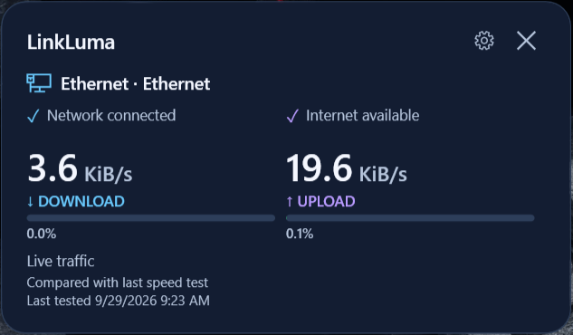
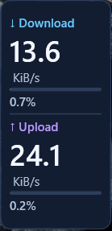
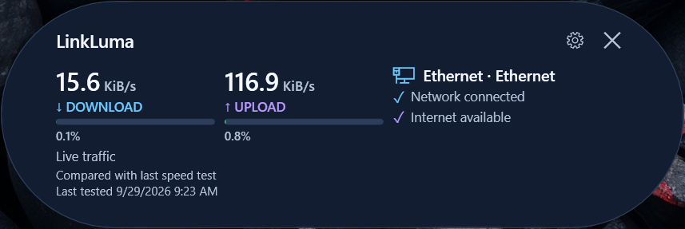
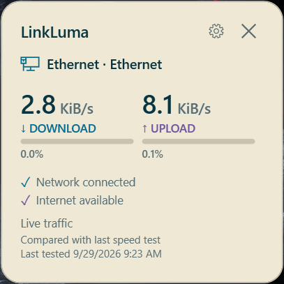
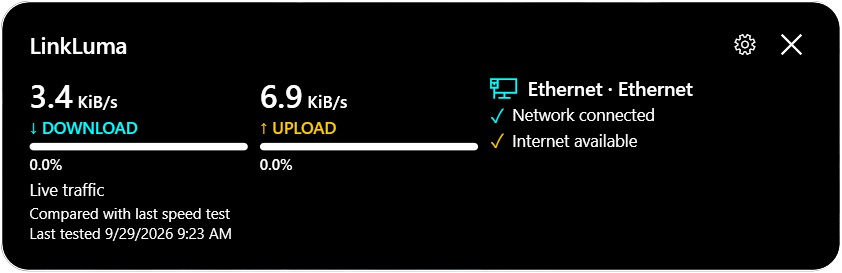
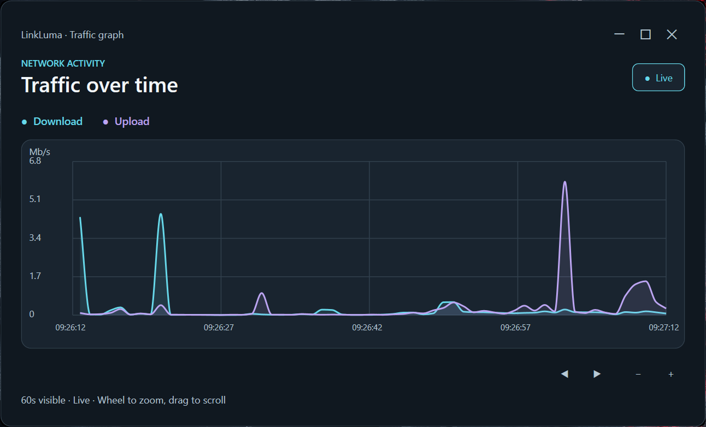
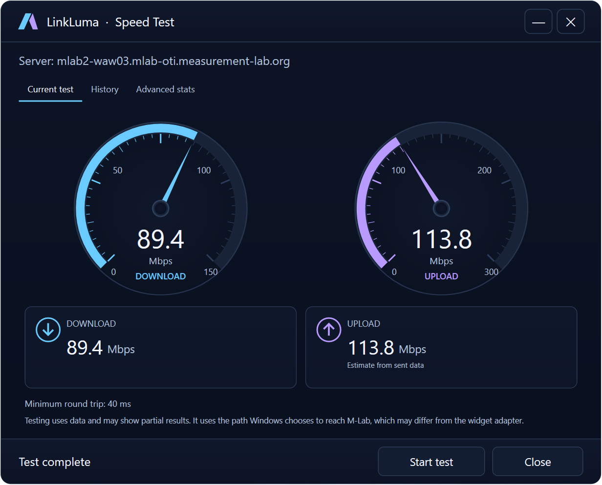
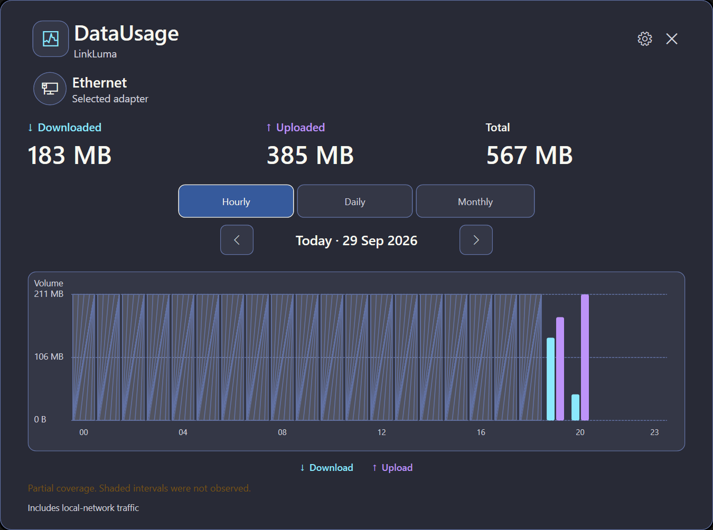
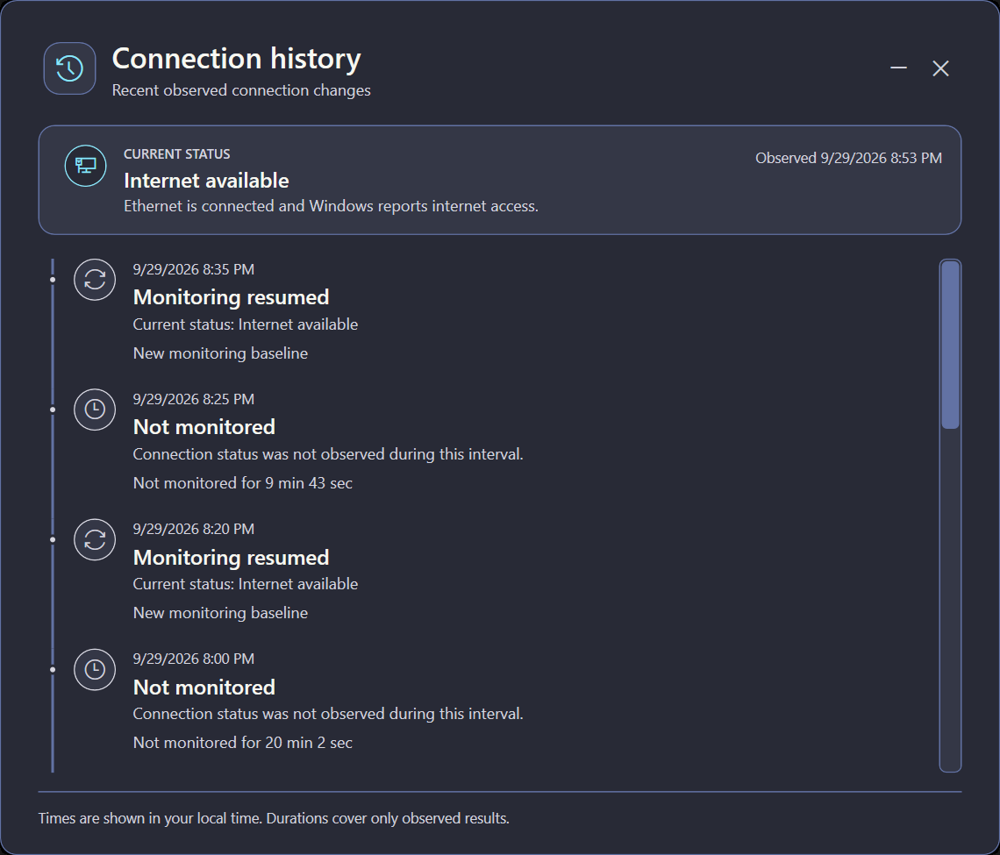

LinkLuma screenshots
See the app up close.
Actual app screenshots from Windows 11. Readings show the moment of capture, not guaranteed speeds. Open an image for its full-size view in a new tab.

Classic widgetConnection and traffic at a glance.

Mini verticalLive traffic in a narrow view.

Pill widgetTraffic and connection status in a low, wide view.

Light tileA compact layout in a lighter theme.

High contrast stripA clear horizontal view with strong contrast.

Traffic graphFollow recent download and upload activity over time.

Optional speed testA completed test against an M-Lab server.

Data usageReview downloaded, uploaded, and total traffic for the selected adapter in hourly, daily, and monthly views.

Connection historyReview recent observed connection changes, monitoring gaps, and the current status.